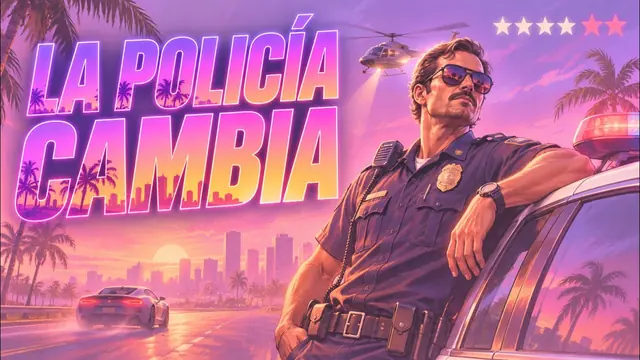

Se abre en YouTubeDe qué trata el vídeo
Comparamos la policía de GTA 5 con lo que se ve de GTA 6 en el material oficial: patrullas que bloquean el camino y persecuciones más tácticas.
El vídeo explica el nivel de búsqueda y las formas de evasión que se comentan para el juego, como cambiar de ropa, de vehículo o ponerse una máscara, y cómo influyen en la inteligencia artificial policial.
Puntos clave
- Patrullas que bloquean el paso
- Nivel de búsqueda
- Evasión: ropa, vehículos y máscaras
- Comparativa GTA 5 vs GTA 6
Título en YouTube: «Las Patrullas de GTA 6 Son Más Inteligentes». Análisis hecho con material oficial de Rockstar Games, sin filtraciones.